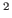

.
The cookbook
John McCrae, Guadalupe Aguado-de-Cea, Paul Buitelaar, Philipp Cimiano, Thierry Declerck, Asunción Gómez Pérez, Jorge Gracia, Laura Hollink, Elena Montiel-Ponsoda, Dennis Spohr and Tobias Wunner.
CITEC, Universität Bielefeld
Ontology Engineering Group, Universidad Politécnica de Madrid
DERI, National University of Ireland, Galway
Deutsche Forschungszentrum für Künstliche Intelligenz
Technical University, Delft
John McCrae
2012-07-31